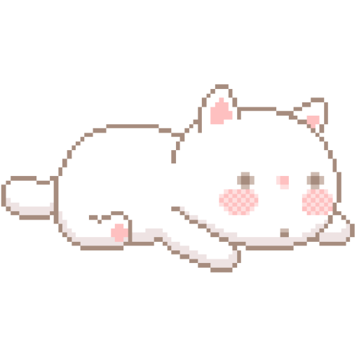

In my time at CSTU, I want it to be a period where I can gain both experiences and connections. I hope to meet friends from both within and outside my field, get to know senior students who are kind and willing to help juniors, and build relationships with professors who always offer guidance. I also want to engage in enjoyable activities, gain valuable experiences, develop discipline, and acquire knowledge that will help me pursue my future dreams.
Pawarisa Amnaka (Get)
Computer Science 39

Journey Throughout my four years at Thammasat University, majoring in Computer Science, I have aimed to gain valuable experiences and develop skills for my future. This path has been envisioned since my first day, leading to my graduation.
Panupong Suttikasem (Film)
Computer Science 39

The past four years at Thammasat University have been transformative. Studying Comput er Science sharpened my critical thinking, problem-solving, and adaptability to technolog y’s rapid changes. From programming languages to AI and data structures, each class laid a stro ng foundation. Beyond academics, friendships and campus life fostered personal growth. Thammasat insti lled resilience, curiosity, and teamwork, preparing me to face future challenges with confidence.
Thanakorn Tedtodsaporn (Boss)
Computer Science 39

During my four years studying Computer Science at Thammasat University, I’ll focus on what interests me. Right now, I’m drawn to Artificial Intelligence, which involves teaching machines to think and learn like humans, and Computer System Security, which is about protecting systems from hackers and other threats. These areas excite me, and I’m eager to explore them further.
Natnicha Jullapoe (Tuanote)
Computer Science 39

In my Journey, I began my computer science journey by mastering programming basics and honing my problem-solving skills. As I explored deeper, I learned about data structures, algorithms, and software development, creating projects that allowed me to apply my knowledge. I also discovered how technology could bring creative ideas to life, from building tools to solving real-world problems. This journey has been about embracing challenges, learning continuously, and seeing the impact of technology in unexpected ways.
Phassakorn Sa-nguanchue (Mark)
Computer Science 39

In the next 3 years at CSTU, I want to develop my Web Designing skills more extensively, both through university courses and external activities. I'm interested in taking Computer Science as a minor and becoming skilled in this field.
Jinnaphat Thongsuwan (Som)
Japanese 66
